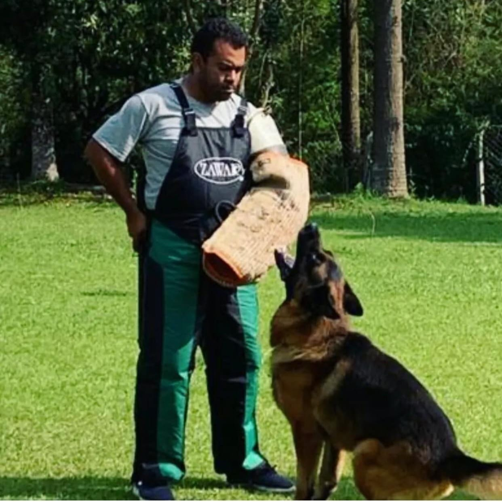
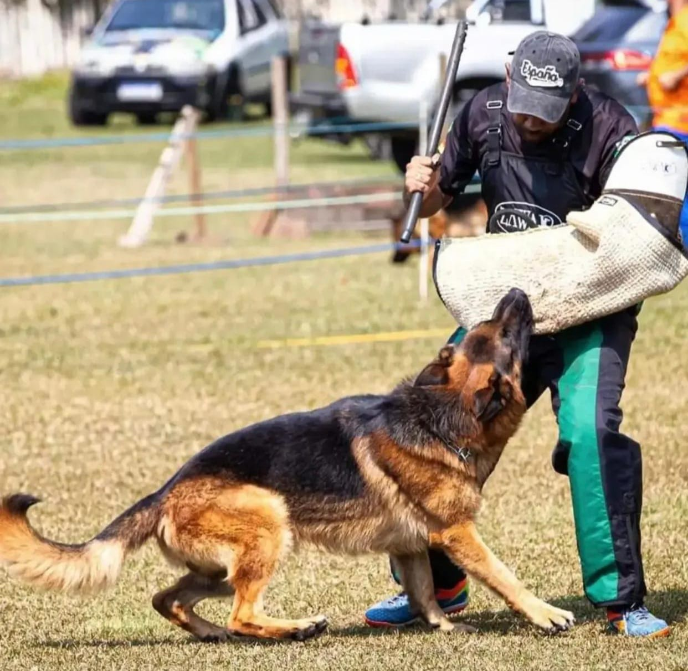
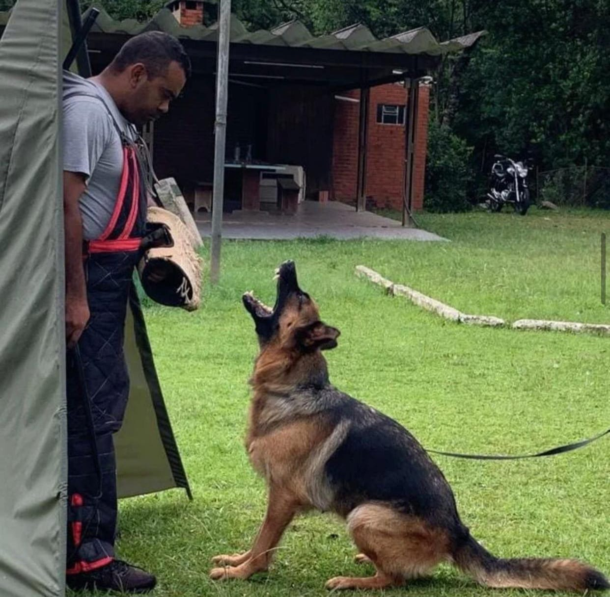
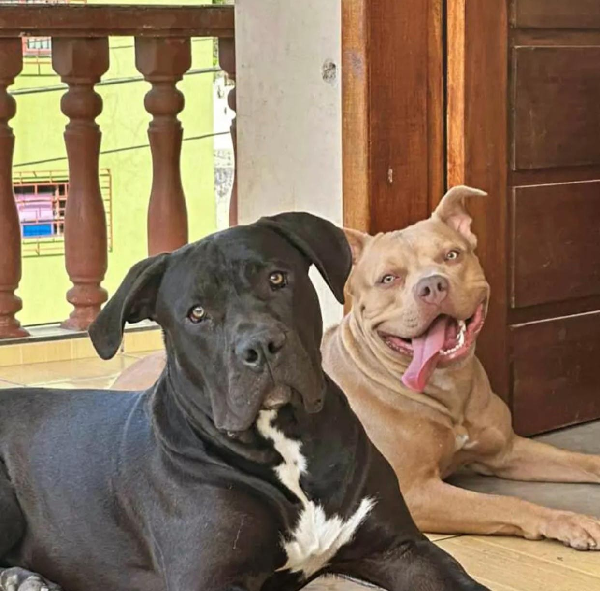
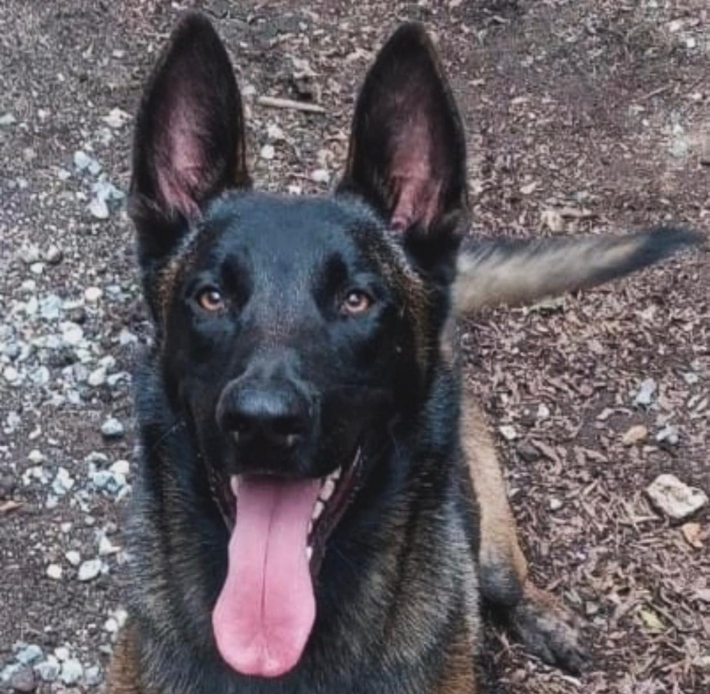
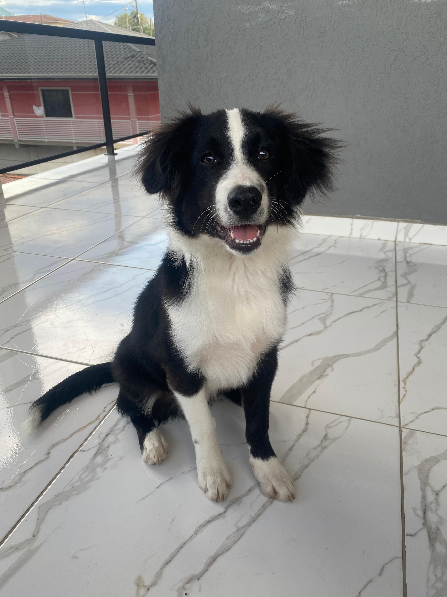
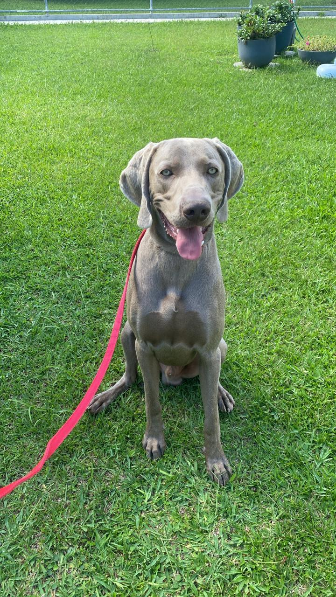
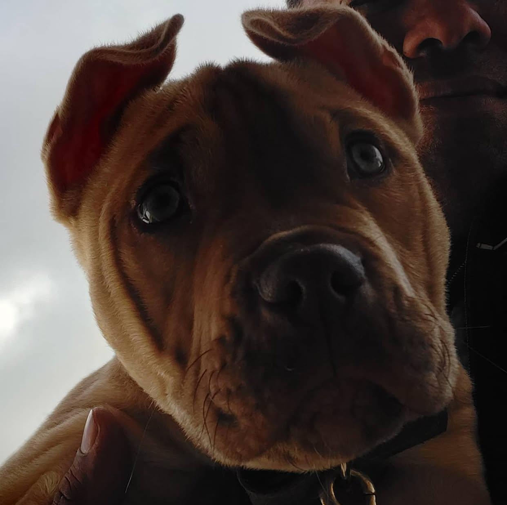
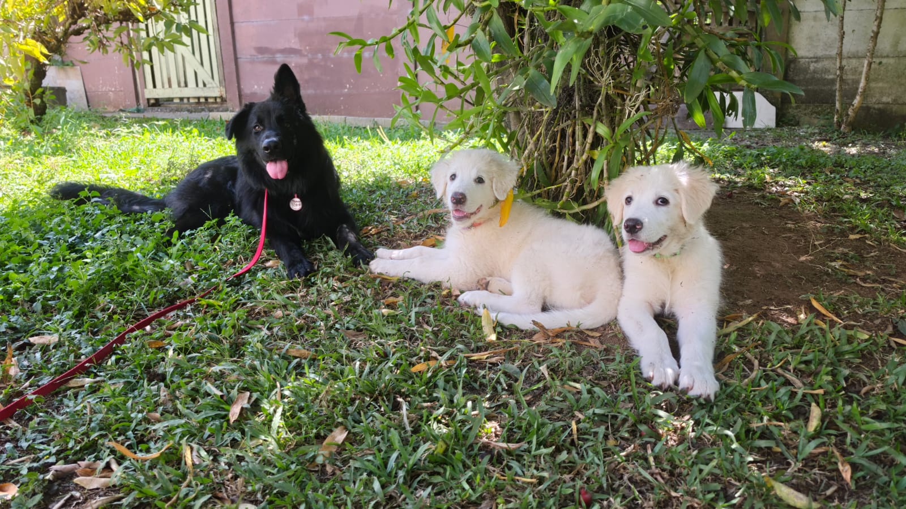

Mais de 10 anos de experiência em adestramento canino. Há uma década ajudamos tutores a construírem uma relação saudável, equilibrada e de confiança com seus cães. Nosso foco é promover disciplina, obediência e bem-estar, sempre fortalecendo o vínculo entre o animal e sua família.
Ensino de comandos básicos como sentar, deitar, ficar e vir quando chamado.
Melhora na convivência com pessoas, crianças e outros animais.
Correção de ansiedade, agressividade, latidos e destruição.
Treinamento avançado para cães com aptidão para guarda e proteção, com foco em disciplina e controle.
Atendimento personalizado para melhorar a convivência com seu cão.
Passeios profissionais para manter seu cão ativo, equilibrado e feliz.







